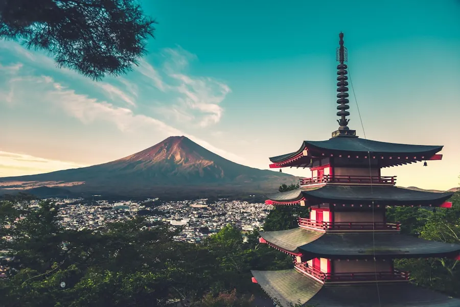
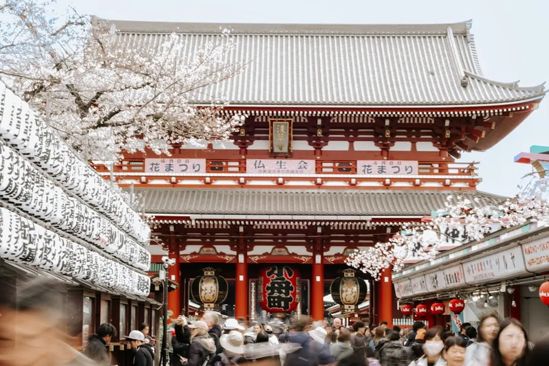
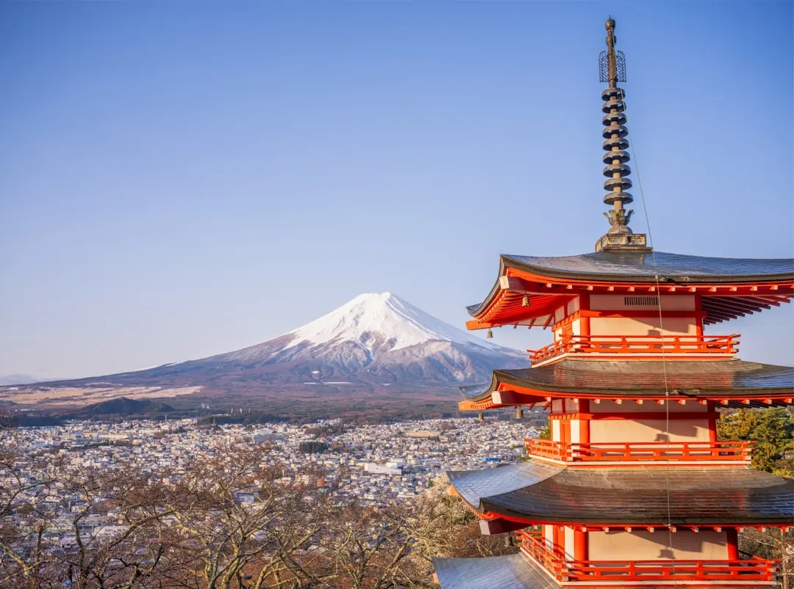

01 · Pourquoi y aller
Découvrir la culture unique
Le Japon est un pays aux mille visages, où la tradition et la modernité cohabitent parfaitement. De la technologie de pointe à la tradition ancestrale, le Japon offre une expérience unique et fascinante. De Tokyo, la capitale vibrante, à Kyoto, la ville traditionnelle, chaque endroit a son propre charme et sa propre histoire.
La culture japonaise est également très riche, avec des festivals et des célébrations tout au long de l'année. En mai, le festival de la floraison des cerisiers est particulièrement populaire, avec des millions de personnes se rassemblant pour admirer la beauté des cerisiers en fleur.


02 · Quand partir
La meilleure période pour visiter
Le mois de mai est considéré comme l'une des meilleures périodes pour visiter le Japon, en raison de son climat agréable et de la quantité de festivals et de célébrations qui ont lieu pendant cette période. Les températures sont généralement douces, allant de 15 à 25 degrés Celsius, ce qui en fait la période idéale pour visiter les attractions extérieures.
Cependant, il est important de noter que le mois de mai peut être très animé, en particulier pendant les weekends et les jours fériés, lorsque les Japonais ont tendance à voyager en masse. Il est donc recommandé de planifier son voyage à l'avance et de réserver les hôtels et les billets de train dès que possible.
03 · Les quartiers/zones
Explorer les différents quartiers de Tokyo
Tokyo, la capitale du Japon, est une ville immense et complexe, avec de nombreux quartiers et zones à explorer. De Shibuya, le quartier de la mode et de la jeunesse, à Asakusa, le quartier traditionnel, chaque endroit a son propre charme et sa propre atmosphère.
Le quartier de Shinjuku est également très populaire, avec ses tours de bureaux et ses bars de rooftop qui offrent une vue imprenable sur la ville. Et pour ceux qui cherchent à découvrir la vie nocturne de Tokyo, le quartier de Roppongi est le lieu à ne pas manquer.

Photo : Lex Brogan / Unsplash
04 · ì voir & à faire
Les attractions incontournables
Le Japon est un pays avec une histoire riche et une culture unique, et il y a donc de nombreuses choses à voir et à faire. De la visite du palais impérial de Tokyo à la découverte des temples et des sanctuaires de Kyoto, il y a quelque chose pour tout le monde.
Les amateurs de nature seront également ravis de découvrir les montagnes et les plages du Japon, notamment les montagnes japonaises de l'ouest et les plages de Okinawa. Et pour ceux qui cherchent à découvrir la vie moderne du Japon, les villes de Tokyo et d'Osaka sont les lieux à ne pas manquer.
- Visiter le palais impérial de Tokyo
- Découvrir les temples et les sanctuaires de Kyoto
- Explorer les montagnes et les plages du Japon
05 · Gastronomie
Découvrir la cuisine japonaise
La cuisine japonaise est célèbre pour sa fraîcheur et sa simplicité, avec des ingrédients tels que le riz, les légumes et les fruits de mer. Les plats les plus populaires incluent le sushi, le ramen et le tempura, qui peuvent être trouvés dans les restaurants et les stands de nourriture de rue partout au Japon.
Le japon a également une grande variété de boissons, notamment le thé vert et le saké, qui sont souvent servies avec les repas. Et pour les amateurs de dessert, les pâtisseries japonaises telles que le mochi et le manju sont délicieuses.
06 · Où dormir
Les options d'hébergement
Le Japon offre une grande variété d'options d'hébergement, allant des hôtels de luxe aux auberges de jeunesse et aux ryokans traditionnels. Les hôtels les plus populaires se trouvent dans les grandes villes telles que Tokyo et Osaka, mais il y a également de nombreuses options dans les petites villes et les villages.
Les ryokans traditionnels sont une excellente option pour ceux qui cherchent à découvrir la culture japonaise, avec des chambres traditionnelles et des repas locaux. Et pour les amateurs de nature, les camps et les lodges sont une bonne option.
07 · Budget & bons plans
Les conseils pour voyageur économique
Le Japon peut être un pays coûteux, mais il y a de nombreux conseils pour les voyageurs économiques. Les repas peuvent être achetés à prix raisonnable dans les supermarchés et les stands de nourriture de rue, et les hôtels les moins chers peuvent être trouvés dans les quartiers moins touristiques.
Il est également possible de trouver des bons plans sur les billets de train et les attractions, en particulier si vous réservez à l'avance. Et pour les amateurs de shopping, les marchés et les magasins d'usine sont une bonne option.
08 · Se déplacer
Les options de transport
Le Japon a un système de transport très développé, avec des trains, des bus et des métros qui relient les grandes villes et les petites villes. Les trains les plus populaires sont les shinkansen, qui relient les grandes villes telles que Tokyo et Osaka.
Les bus sont également une bonne option, en particulier pour les voyages courts. Et pour les amateurs de conduite, il est possible de louer une voiture, mais il est important de noter que la conduite au Japon peut être difficile pour les étrangers.
09 · Conseils pratiques
Les conseils pour un voyage réussi
Il est important de planifier son voyage à l'avance, en particulier pendant les périodes de pointe. Il est également recommandé de réserver les hôtels et les billets de train dès que possible.
Il est également utile d'apprendre quelques phrases de base en japonais, telles que 'konnichiwa' (bonjour) et 'arigatou' (merci). Et pour les amateurs de technologie, il est possible de télécharger des applications de traduction et de navigation pour aider à naviguer dans le pays.
Le conseil Odyssa
Pour un voyage réussi au Japon, il est important de planifier à l'avance et de réserver les hôtels et les billets de train dès que possible. Utilisez l'application Odyssa pour organiser votre itinéraire et trouver les meilleures options d'hébergement et de transport.
Planifiez votre séjour à Japon jour par jour et gardez tout hors ligne avec Odyssa — gratuitement.
Télécharger Odyssa